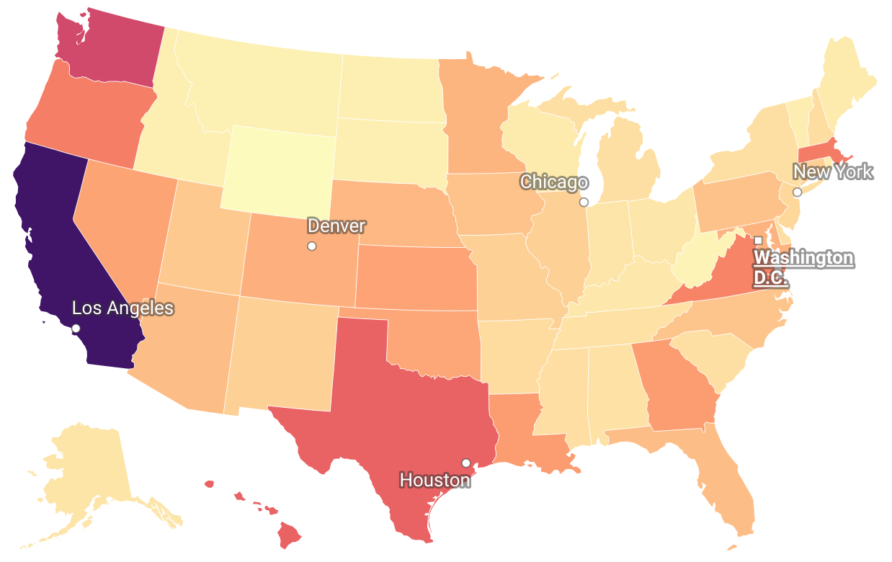
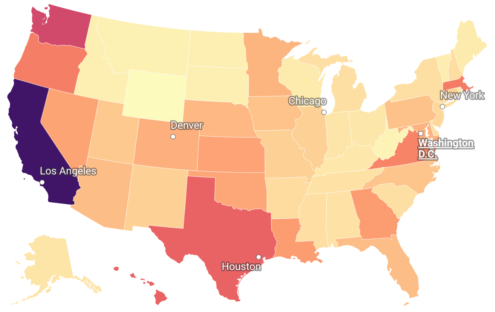
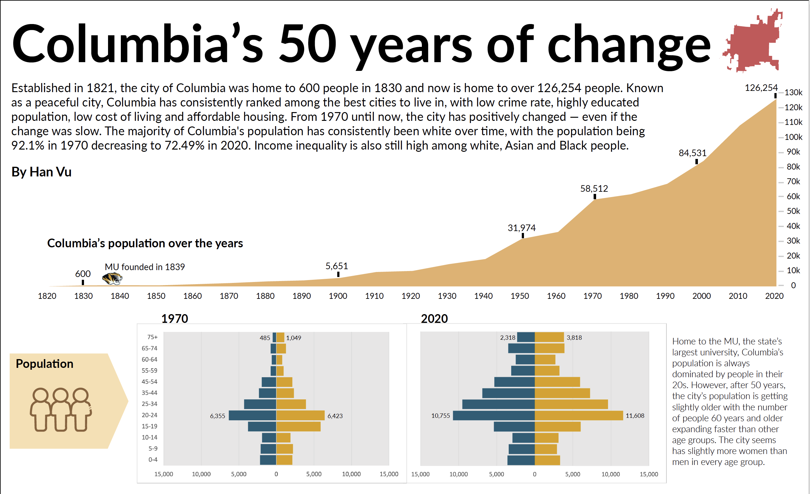
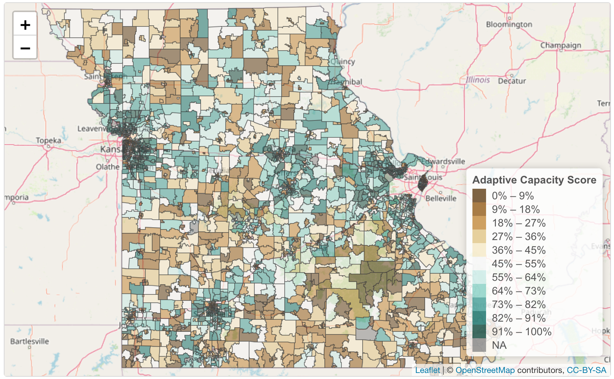
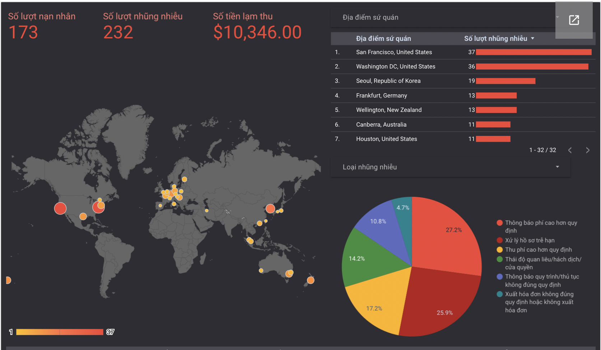

I have 13 years of experience as an award-winning political journalist in Vietnam, where I covered both domestic and international events.
As a Fulbright Scholar and a data fanatic, I'm pursuing a master's degree in data journalism at the first journalism school in the world, University of Missouri-Columbia.
I also work for Columbia Missourian, a local newspaper that has served the community for 114 years and counting, as the Graphics Desk Supervisor.
 

This is a on-going project.
Vietnamese immigrants arrived in the US following a turbulent historical event in 1975, settling here for 47 years. Despite the birth of new generations, historical sorrow still dominates and shapes the tale of the Vietnamese in America.
A new storyline for the story is long overdue, especially when in recent years, many young Vietnamese talents, particularly those in the field of technology, have immigrated to the nation in search of the new American dream.
In this project, I get the most recent information on Vietnamese Americans from the 2021 Social Community Survey (ACS), which was just published on September 15. I do this by using the R tidycensus package.
Combining information on Vietnamese people from numerous sources along with data collected since 1980, I created maps and charts to examine the situation of Vietnamese people in the US from a variety of angles: English Proficiency; Age; Education and Employment; Income and Poverty; Immigration Pathways and Naturalization; Unauthorized Immigrant Population; Health Coverage; Diaspora; Remittances; Distribution by State and Key Cities.
The initiative was motivated by the Migration Policy Institute's study on Vietnamese immigrants in the US.
.
For this project, I collected exclusive evidence showing serious law violations of a real estate tycoon that lured tens of thousands of people to buy unsafe houses, leading to the man's prosecution.
Although only 231 apartments were allowed to be erected under the construction permission, this person's company built 1602 units, which was seven times the permitted number.
The lower than market price has attracted many people to buy houses here, despite many unsafe conditions. This had an impact on both safety and society.
Due to the excessive population concentration that outpaces planning, overloads infrastructure, there aren't enough schools for kids, and traffic jams happen every day.
The violation occurred in a so-called “model urban area” in Hanoi - the capital, and was detected by the authorities through inspection but they did nothing to address it.
After my article was published, many other newspapers got involved, and many violations in other projects of this businessman were also brought to light. The businessman was investigated and eventually prosecuted.
Several local officials were also disciplined and prosecuted.

"I'm going to tell the Columbians - who live their entire lives in the city, the things that they don't know about it, even though I'm a foreigner being here for just five months," was the thought I had in mind when I did this project.
Using R tidycensus and tidyverse packages, I pulled data from the Census Bureau to see how the city has changed from 1970 to 2020 in different aspects: median age, median income, crime rate, poverty rate, education, etc.
Take a look at the print version and interactive version of it.

I created this project to produce Missouri's Adaptive Capacity Score in 2020 to determine the resilience level of the state's community tracts. This project was inspired by Anthony Holmes's innitiative to create this index for Oregon in 2018.
The project uses R tidycensus to extract data from the Census Bureau on a variety of topics, including employment, housing, education, poverty, income, race, age, home value, and people with disabilities. In total, there are over 100 variables used in the project. To make it simple for audiences to see the index to the track level, an interactive map was created in R using leaflet package.

Used to be considered a taboo topic in Vietnam, the abuse of power of consulate personnel to increase visa service fees by double was hardly touched by mainstream media, despite the upset of Vietnamese people overseas.
I worked with Thai Duong, a Vietnamese Google engineer, to collect evidence and create a report showing that complaints about corruption happen in almost every Vietnamese Embassy overseas.
The article published in Thanhnien Newspaper created a massive buzz among Vietnamese communities overseas and the Ministry of Foreign Affairs staff, contributed to igniting the change in consular procedures.
1 / 8

Questioned Minister of Labor, Invalid and Social Affairs at the lobby of the National Assembly session on the most prominent changes in the 2019 Labor Code: increasing the retirement age and authorized independent worker’s unions.
2 / 8

Interviewed Politburo member, Minister of Public Security on tackling human trafficking after 39 Vietnamese people were found dead in a container in Britain.
3 / 8

Along with my colleagues, I interviewed General David L. Goldfein, Chief of Staff of the Air Force, and General Charles Q. Brown, Jr., commander of Pacific Air Forces, about the U.S.’s Indo-Pacific strategic and military cooperation when they paid a historic visit to Vietnam September 2019.
4 / 8

Interviewed Chief Executive of the World Bank Group Kristalina Georgieva (now the Managing Director of IMF) about promoting green energy and mitigating side effects of hydropower.
5 / 8

Set work aside, Ms. Kristalina Georgieva talked to me about the Fitbit I was wearing and how people in developing countries were starting to care about their health.
6 / 8

Interviewed Politburo member, Secretary of Hanoi, about an alleged corruption case related to the city’s Chairman.
7 / 8

Interviewed Chairman of Electric Vietnam, Vietnam’s biggest state-owned enterprise, on the controversial energy price issue.
8 / 8

Interviewed Auditor General of the State Audit Office of Vietnam on audit results of state-owned economic groups that suffered losses.
❮
❯